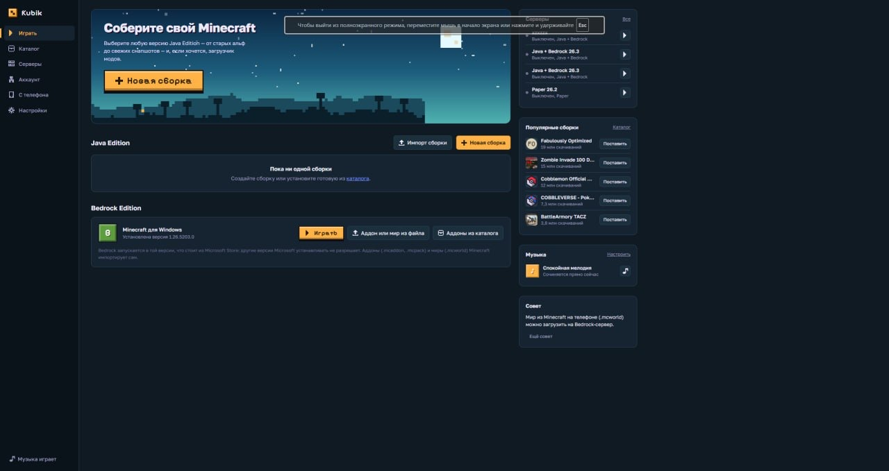
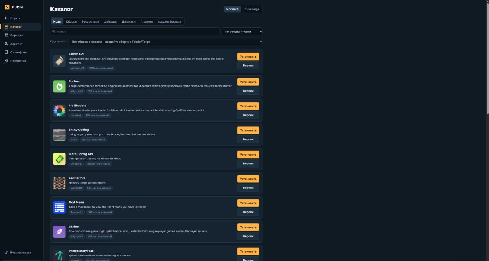
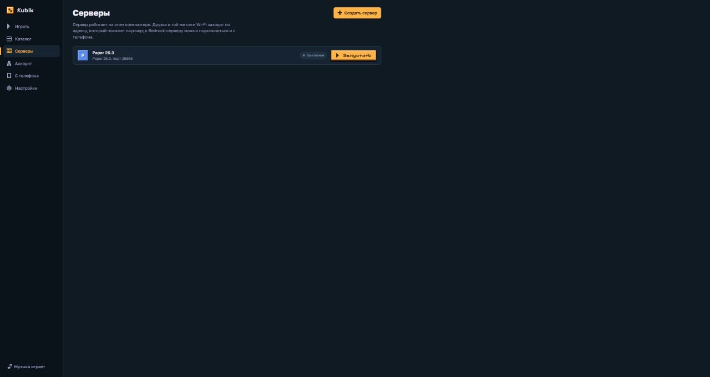
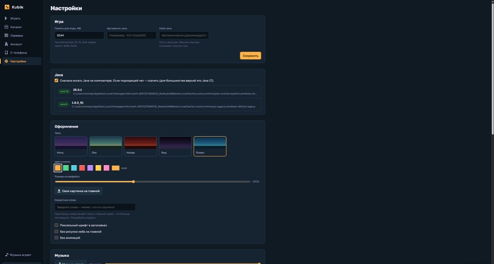

Любая версия Minecraft Java и Bedrock, свой сервер «Java + Bedrock» для игры со всеми друзьями, моды из Modrinth и CurseForge, управление с телефона. Один файл, никаких настроек.
То, чего нет у обычных лаунчеров.
Любая версия Java Edition — от старых альф до свежих снапшотов. Запускает и Bedrock Edition из Microsoft Store. Fabric, Quilt, Forge, NeoForge — Kubik сам поставит нужную Java.
Каталог Modrinth и CurseForge: моды, плагины, ресурспаки, шейдеры, датапаки. Импорт файлов .mrpack и .zip. Две сборки объединяются в одну, конфликтные моды Kubik убирает сам.
Друзья с ПК и с телефонов на один сервер. Vanilla, Paper, Purpur, Fabric, Forge, NeoForge, Bedrock. Плагины и моды — одной кнопкой из каталога.
Kubik сам попросит роутер открыть порты (UPnP), а если провайдер даёт «серый» IP — запустит туннель playit.gg или покажет адрес для Radmin VPN / ZeroTier / Tailscale.
Бан, разбан, кик, операторы, белый список — кнопками, с причиной. Работает и на выключенном сервере. На Bedrock‑сервере Kubik сам выгоняет забаненных.
Круглая кнопка в углу: расскажет, как поставить моды, собрать сервер, позвать друзей, разобрать вылет. Без ключа отвечает встроенными подсказками, с ключом Anthropic — отвечает Claude.
Огромный растущий босс из обычных мобов и блоков. Его видят и Java‑, и Bedrock‑игроки, модов не нужно. Для серверов Minecraft 1.20.5 и новее.
5 тем, свой цвет кнопок, пиксельный шрифт, своя картинка на главной. Секретные слова (крипер, свинка, нотч, херобрин, габен, алмаз, лава…) включают эксклюзивные темы.
Прямо в Kubik: почта подставляется, пароль вводится на сайте Microsoft. Привязанные к аккаунту сборки, скин и покупки подхватываются.
Взгляните на Kubik Launcher.

Удобное создание сборок, выбор версий Java и Bedrock, а также быстрый запуск игры.

Огромный выбор модов, плагинов, ресурспаков и шейдеров с быстрой установкой в один клик.

Управление локальными мирами и серверами для совместной игры с друзьями по сети и интернету.

Кастомизация тем оформления, выбор цвета кнопок, управление путями Java и параметрами памяти.
Тот же лаунчер, что на ПК — значком на экране «Домой», без браузерных панелей.
На ПК откройте «С телефона» и отсканируйте QR‑код. В Safari или Chrome нажмите «Поделиться» → «На экран „Домой“». Готово — значок Kubik появится рядом с другими приложениями.
Ставить моды и сборки, управлять сервером и консолью, банить игроков, пользоваться ИИ‑помощником. На Bedrock‑сервере кнопка «Зайти из Minecraft» сразу открывает игру с нужным адресом.
Сама Java Edition работает только на ПК — iOS и Android не разрешают запускать её на телефоне. Поэтому компьютер с Kubik должен быть включён и в той же Wi‑Fi, что телефон.
Короткая выжимка — что добавилось в последней версии.
Растущий босс из обычных мобов и блоков. Виден и Java‑, и Bedrock‑игрокам, модов не нужно. Призывается кнопкой или звездой Незера на плачущем обсидиане.
Круглая кнопка в углу, работает и на телефоне. Без ключа — встроенные подсказки по лаунчеру, с ключом Anthropic — отвечает Claude.
Бан, разбан, кик, операторы, белый список — кнопками, с причиной. На Bedrock‑сервере Kubik сам выгоняет забаненных при входе.
UPnP, распознавание «серого» IP, туннель playit.gg, адреса виртуальных сетей. Друзей больше не нужно звать только по Wi‑Fi.
Ставится значком на экран «Домой» через QR‑код. Кнопка «Зайти из Minecraft» открывает Bedrock‑сервер прямо с телефона.
Fabric и NeoForge теперь пускают игроков с телефонов через Geyser + Floodgate. Часть блоков из модов показывается через Hydraulic.
Скачай Kubik Launcher и начни играть по‑новому.
Скачать лаунчер